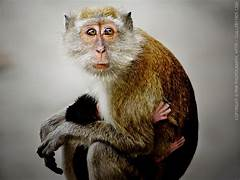
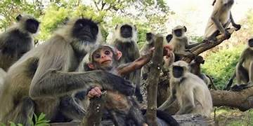

Profil Monyet Dunia Primata
Primata adalah mamalia yang menjadi anggota ordo Primates. Primata pertama kali muncul 85–55 juta tahun yang lalu dari mamalia darat bertubuh
kecil yang beradaptasi untuk hidup di pepohonan hutan tropis. Banyak karakteristik primata yang merupakan adaptasi terhadap kehidupan di lingkungan
yang menantang ini, di antaranya otak yang besar, ketajaman visual, penglihatan warna, tulang-tulang gelang bahu yang memungkinkan banyak gerakan pada
sendi bahu, serta tangan yang cekatan. Primata terpisah menjadi dua subordo, yaitu Strepsirrhini (mencakup lemur dan loris) dan Haplorhini (mencakup monyet,
kera, dan manusia). Ilmu yang mempelajari primata disebut primatologi.
Informasi lebih lengkap dapat ditinjau
disini!
Kembali ke halaman awal
Jenis Primata
Beberapa jenis primata yang berhabitat asli di indonesia:
1. Orangutan
Orangutan Sumatra (Pongo abelii)
Orangutan Kalimantan (Pongo pygmaeus)
Orangutan adalah sejenis kera besar yang hidup di hutan tropika indonesia dan malaysia, khususnya
Pulau Sumatera dan Pulau Kalimantan. Ciri-ciri dari orang utan adalah : memiliki tubuh yang gemuk besar
dengan leher besar serta kepala yang besar dengan posisi mulut yang tinggi, memiliki lengan yang panjang
dan kuat, memiliki kaki yang pendek dan tertunduk, dan tidak mempunyai ekor, memiliki tubuh selimuti rambut
kemerahan atau kecoklatan, memiliki telapak tangan dengan 5 jari. memiliki tinggi berkisar 1,25-1,5 meter
dengan berat sekitar 50–90 kilogram untuk jantan dan sekitar 30–50 kilogram untuk betinanya. Terdapat 2
jenis (spesies) orangutan yaitu Orangutan Kalimantan / Borneo (Pongo pygmaeus) dan Orangutan Sumatra (Pongo abelii).
Orangutan termasuk dalam hewan omnivora atau pemakan segala, mereka memakan buah-buahan, kulit pohon, dedaunan, serangga,
selain itu juga nektar,madu dan juga jamur. Orangutan berkerabat dekat dengan manusia dengan kesamaan DNA sebesar 96.4%.
Orangutan termasuk dalam hewan yang dilindungi.
Klasifikasi ilmiah Orangutan
Kerajaan:Animalia
Filum:Chordata
Kelas:Mamalia
Ordo:Primates
Famili:Hominidae
Upafamili:Ponginae
Genus:Pongo
Info lebih lanjut dapat dilihat
disini!
Kembali ke halaman awal
Evolusi Primata
Primata adalah hewan mamalia yang termasuk dalam ordo Primates. Ciri-ciri primata antara lain: memiliki lima jari (pentadactyly) dengan kuku jari, memiliki Ibu jari dengan arah yang berbeda. Pada primata, ibu jari berlawanan, jari kuku pendek (bukan cakar) dan jari yang panjang dan menutup ke dalam adalah sebuah relik dari posisi jari (brachiation) moyangnya pada masa lalu yang barangkali menghuni pohon, memiliki bentuk gigi yang sama dan rancangan tubuh primitif (tidak terspesialisasi). Memiliki karakteristik arah mata yang bersifat memandang ke depan bukan ke samping (stereoskopik) serta postur tubuh tegak.
| Monkey 1 | Monkey 2 |
Keahlian
-
Mandi
Minum